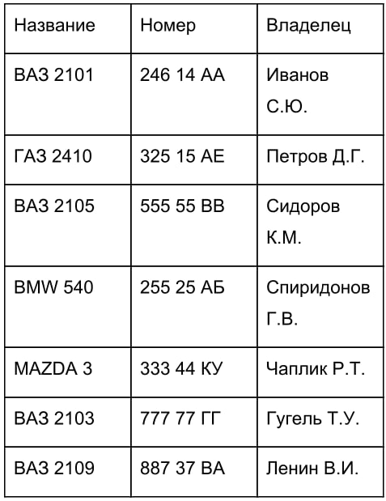

Home
All tasks
Task 0
- Create an object "House" with properties: windows and doors, the values of which will be the color. Create methods: paint the window, paint the doors, paint everything. Methods must take color. Test object
- Create object "Car". It will have the following properties: model, brand and mileage and the "Owner" object and the following methods: the drive function takes one parameter is the number of kilometers. The owner object has the following properties: first name, last name, age and methods: change the surname. Test object
Task 1
For all subsequent tasks, general methods and necessary properties should be moved to prototype.
-
Create a Rabbit constructor that will create objects that have the "color" property and the "change color" method. The constructor takes as a function parameter the original color of the rabbit. Create two rabbits of different colors and swap them color to gold.
-
Create a Pupil constructor that takes a student name and creates an object with the following properties and methods:
Properties:
- Student's name
- Score array
Methods:
- put an estimate- which takes as a function parameter an estimate and adds to ratings array
-
Create a Horse constructor that takes a horse name and creates an object with the following properties and methods:
Properties:
- horse name
- mileage
- total mileage by all horses
Methods:
- a run function that takes a distance as a function parameter, and increases the mileage and total mileage by that distance.
Create two horses and test that the total mileage was equal to the sum of the mileage every horse
-
Modify the Horse constructor as follows: add a property fatigue. Every 1 km run adds 1 unit of fatigue. When tired reaches 10 the horse must rest 1 second. Implement this in a rest method, which takes as a function parameter, the method to be executed after rest and parameters of this method. The task of the method is to display the message “Horse is resting." Implement a delay of 1 second using the SetTimeout function. After which should reset the fatigue and execute the method that came as a parameter functions. For example: a horse must run 8 km. At the moment, fatigue is 4 units. When the horse runs 6 km, fatigue will reach 10 units. On this At this point, the horse must rest for 1 second. Fatigue will then be reset. And after rest, the horse must run the remaining 2 km.
-
Create a Shop constructor that will create objects that have the following properties and methods:
Properties:
- warehouse object (key product name, quantity value)
- pricing object (key product name, value price)
- number of goods in stock
- number of products in all created stores
Methods:
- get product price function that takes the name of the product and returns the price
- a function to get the quantity of a certain product in stock, which takes the name of the product and returns the quantity of this product in stock
- a function to buy a product that takes the name of the product and the quantity and reduces the quantity from the warehouse object as much as was specified in the parameters. Provide a check that there is no negative quantity of goods in the warehouse.
- a function to add goods to the warehouse, which takes an object with all the goods to be added and adds them to the warehouse. In the absence of prices for any of the goods, this product does not need to be added.
- function add rates, which accepts an object of rates to be added and those that are not present to be added, and which present replace
Task 2
Create a MyArray constructor that creates an object with the following methods and properties:
Methods:
- push
- shift
- join
- concat
- pop
- unshift
- slice
- reverse
- sort
- splice
Properties:
Task 3
Create an array of Students. Each student contains an average mark, a name, a major subject. The average grade is calculated at the time the student is created from the array of grades. The array of ratings is generated randomly. Display this array as a table.
Task 4
Create a database of cars in the parking lot (minimum 10) using objects, output as a table
Example:

Progress:
- Create a constructor for a car directory (make, model)
- Create a constructor for a list of cars in the parking lot (number, owner, link to the guide)
- Create an array of objects of entries in the directory of car types
- Create an array of objects for the list of cars in the parking lot
- Generate the HTML code of the table and output it to the stream using the write method.
Home